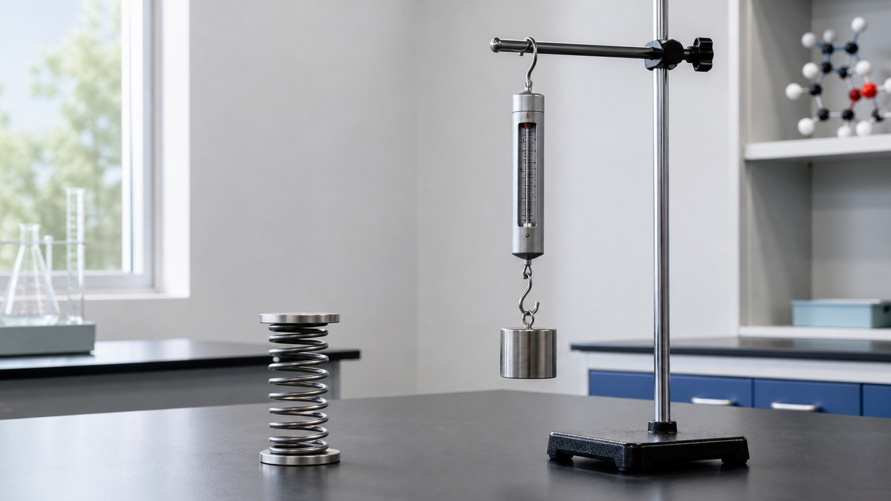

改变形状
按橡皮泥、拉弹簧都说明力可以使物体发生形变。

下册 · 第七章 · 力
从“推、拉、吸引”中抽象出力，学习用大小、方向和作用点描述它，再用弹簧测力计和重力公式把作用变成可测量的数据。
知识桥梁
质量表示物体所含物质的多少，重力是地球对物体的吸引作用。二者有关，但不是同一个物理量。
第 1 节
力不能离开物体单独存在。一个物体施力时，必须同时找到受力物体。
本节抓手
箭尾在中心，箭头水平向右，箭头长度表示 60 N。
按橡皮泥、拉弹簧都说明力可以使物体发生形变。
速度大小或运动方向发生改变，都属于运动状态改变。
两个力大小相等、方向相反，但受力物体不同，不能相互抵消。
第 2 节
先判断物体发生的是弹性形变还是塑性形变，再判断是否会产生弹力。
这里的百分比只表示变化趋势；超过弹性限度后，弹簧可能不能恢复原状。
第 3 节
质量是物体本身的属性；重力是地球等天体对物体的吸引，大小由质量和所在地的 g 共同决定。
地点改变时质量仍为 2.0 kg；地球教材近似条件下，重力为 20.0 N。
第七章检查
完成 11 题，检查力的概念、示意图、弹力实验和重力迁移。